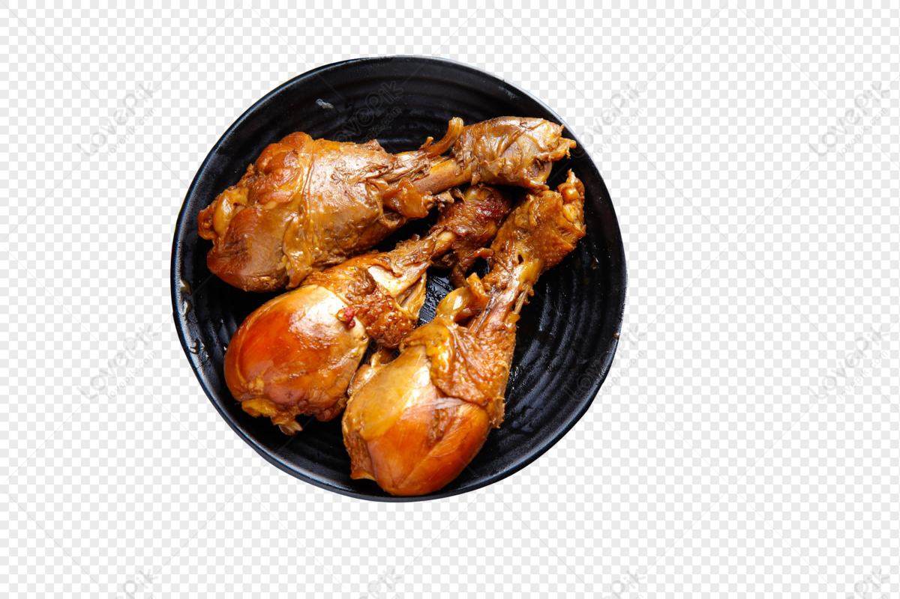

Tandoori Chicken

Description
Tandoori Chicken is a popular Indian dish known for its smoky flavor and vibrant red color.
Ingredients
- 4 large chicken leg quarters or 8 bone-in, skin-on chicken pieces
- 1 cup plain yogurt (Greek yogurt works well)
- 3 tablespoons lemon juice
- 2 tablespoons vegetable oil or melted ghee
- 2 tablespoons tandoori masala (store-bought or homemade)
- 1 tablespoon ginger-garlic paste
- 1 teaspoon ground cumin
- 1 teaspoon ground coriander
- 1 teaspoon paprika or Kashmiri red chili powder (for color)
- 1/2 teaspoon turmeric powder
- 1/2 teaspoon ground black pepper
- 1/2 teaspoon ground cinnamon
- 1/2 teaspoon ground cardamom
- Salt, to taste
- Fresh cilantro leaves, chopped (for garnish)
- Lemon wedges, for serving
Steps
- Prepare the chicken: Wash the chicken pieces thoroughly and pat them dry with paper towels. Make deep cuts or gashes into the chicken pieces to allow the marinade to penetrate.
- Marinate the chicken: In a large bowl, combine yogurt, lemon juice, vegetable oil or melted ghee, tandoori masala, ginger-garlic paste, ground cumin, ground coriander, paprika or Kashmiri red chili powder, turmeric powder, ground black pepper, ground cinnamon, ground cardamom, and salt. Mix everything well to form a smooth marinade.
- Coat the chicken: Add the chicken pieces to the marinade, ensuring they are well coated on all sides. Cover the bowl with plastic wrap or transfer the chicken and marinade to a zip-top plastic bag. Marinate in the refrigerator for at least 2 hours, preferably overnight, to allow the flavors to meld and the chicken to tenderize.
- Preheat the oven: Preheat your oven to 425°F (220°C). If you have a grill or barbecue, you can also cook the chicken over direct heat for a smokier flavor.
- Cook the chicken: Place the marinated chicken pieces on a baking rack set over a baking sheet lined with aluminum foil (for easy cleanup). Bake the chicken in the preheated oven for 25-30 minutes or until the chicken is cooked through and the skin is charred in spots. Alternatively, if grilling, cook the chicken over medium-high heat, turning occasionally, until cooked through and charred.
- Serve: Remove the chicken from the oven or grill and let it rest for a few minutes. Garnish with chopped cilantro leaves and serve hot with lemon wedges on the side.